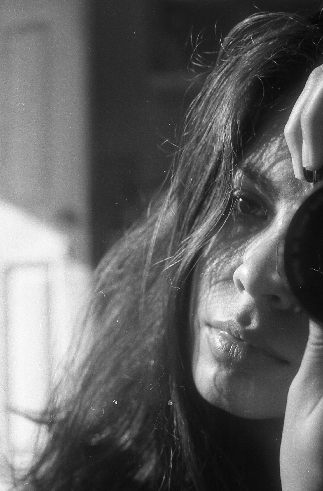

Catalina Cea Sepúlveda
Región de Valparaíso
Estudios y Formación
Proveniente de la ciudad de Quillota, realizo mis estudios de la educación básica y media allá, para el 2015 estudiar Diseño en la Pontificia Universidad Católica de Valparaíso. Paralelamente, desde el año 2012 he aprendido fotografía digital y analógica de forma autodidacta, además de realizar talleres informales sobre fotografía digital, fotografía análoga, técnica de pintura Marmolado, la técnica artesanal de fotografía Cianotipia, Talleres de revelado en blanco y negro y color (proceso C41). Además, me encuentro constantemente aprendiendo, también de forma autodidacta, distintos diseños de encuadernación artesanal.
Concursos y Convocatorias
Mi trabajo ha sido seleccionado en diversas convocatorias: el año 2013 y 2014 para la exposición
Yo Fotografío mi Barrio en el
Museo Nacional de Bellas Artes, Santiago. También para diversas revistas y publicaciones online durante los dos últimos años. Este año fui eleccionada junto a la
Cooperativa Metamorfosis en las
Brigadas Fotográficas del
Festival Internacional de Fotografía en Valparaíso para su versión 2018.
Exposiciones y Publicaciones
2013: (julio) Exposición Despertarte (fotografía Digital) en el Hall del Instituto Rafael Ariztía, Quillota.
2013 (agosto) Exposición Yo Fotografío mi Barrio (fotografía Digital) en el Museo Nacional de Bellas Artes, Santiago.
2014: (junio) Exposición De lo Efímero a lo Eterno (fotografía Digital) en el Salón Urbano, Plaza de Armas, Quillota.
2014 (agosto) Exposición Yo Fotografío mi Barrio (fotografía Digital) en el Museo Nacional de Bellas Artes, Santiago.
2014 (agosto) Exposición Sobre lo Imperfecto (fotografía Digital) en el Centro de Promoción de la Cultura y las Artes, Quillota.
2014 (septiembre) Exposición No Somos Turistas (fotografía Digital) en la Casa de la Cultura, Quillota.
2016 (diciembre) Exposición El Regalo: Travesías por América (fotografía Análoga) en la Casa Central de la Pontificia Universidad Católica de Valparaíso.
2017 (Octubre - Noviembre) Exposición Artefactos y Creaturas (Diseño de Espacios Expositivos) en el Centro Cultural Las Condes, Santiago.
2018 (Junio) Exposición Kiosk (Fotografía análoga en Cianotipia) en conjunto con la exposición “Habitamus” en el Centex de Valparaíso.
2018 (Junio) organizadora del Encuentro de Mujeres Fotógrafas en torno a las Técnicas de Emulsiones Artesanales.
2018 (Agosto) Exposición Yo Fotografío la Diversidad (Fotografía Digital) en el Museo Nacional de Bellas Artes, Santiago.
2018 (Agosto) Exposición Fotografía Experimental (Fotografía análoga en film y en Cianotipia) en la Galería Escalera, Barrio Bellas Artes, Santiago.
2018 (Agosto) Publicación en el Fanzine Invierno Triste (Fotografía Digital) de Trazar Ediciones, Santiago.
2018 (Agosto) Publicación y Lanzamiento en Prisma (Serie Sombragrafías, Cianotipia) revista dedicada a la fotografía análoga editada por la Editorial AFAN, Santiago.
2018 (OCtubre) Exposición Imaginario Ruta 68 (Fotografía Análoga) para el Lanzamiento del disco Ruta 68 del músico Gonzalo Sáez en la Sala SCD, Teatro Mauri, Valparaíso.
Experiencia Laboral
Experiencia laboral en fotografía de Espacios y Productos para fines publicitarios. También realizo fotografía de retratos para modelos y músicos (solistas y bandas) para redes sociales, tanto en sesiones fotográficas como en eventos musicales. Además, he realizado trabajos especiales en fotografía análoga para el arte de discos de bandas (portada y cancionero) como Gonzalo Sáez y Almenara, ambos en Valparaíso.